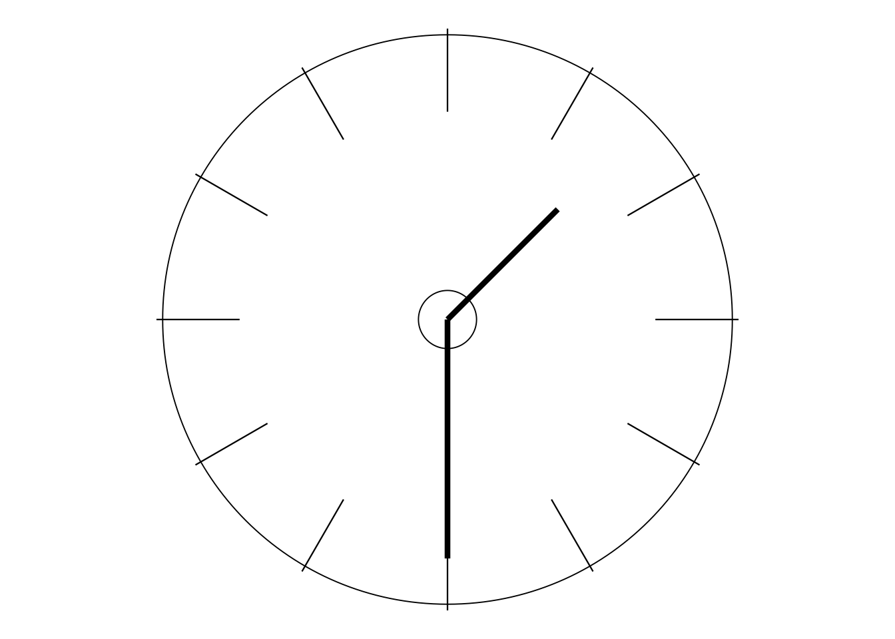
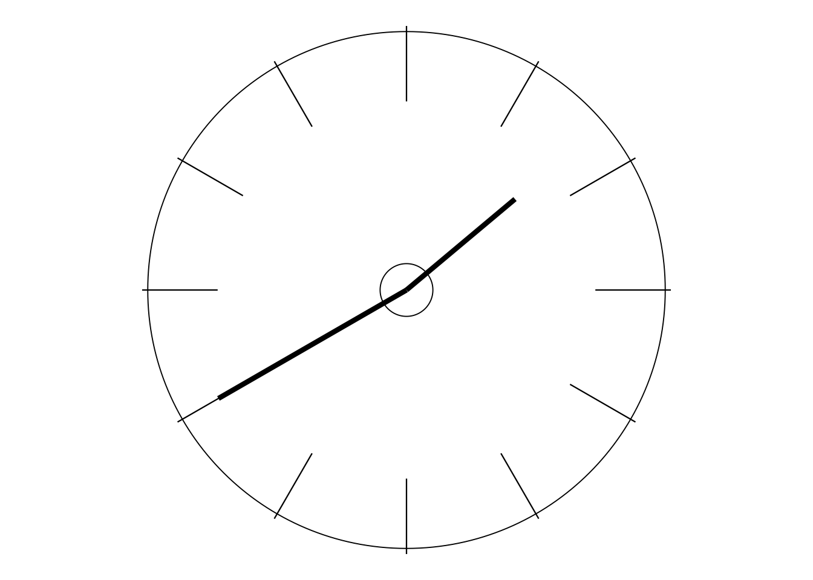
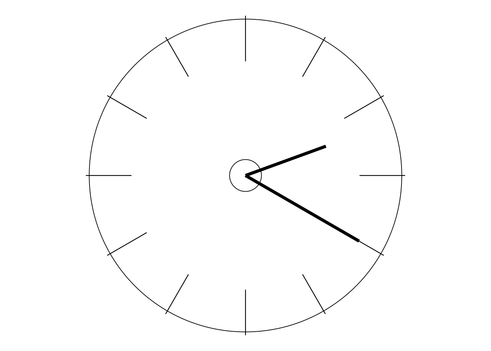
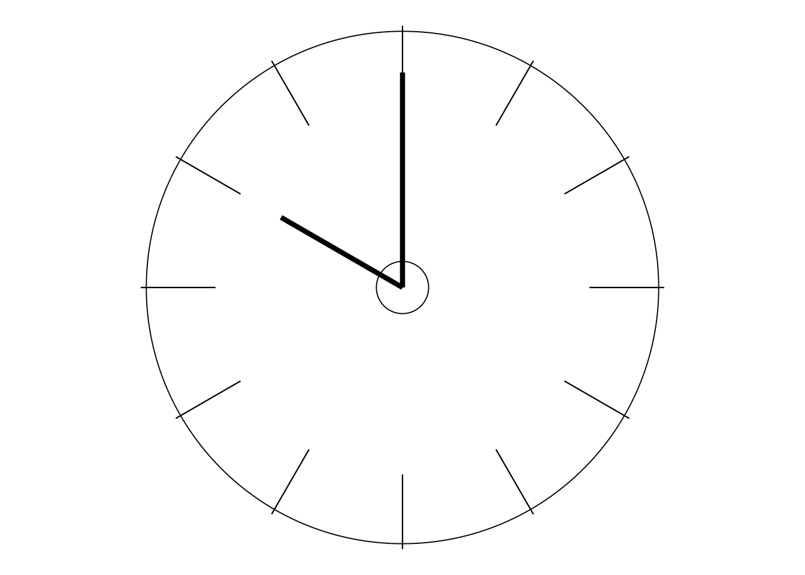
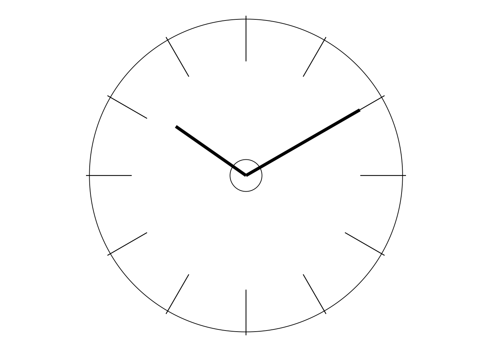
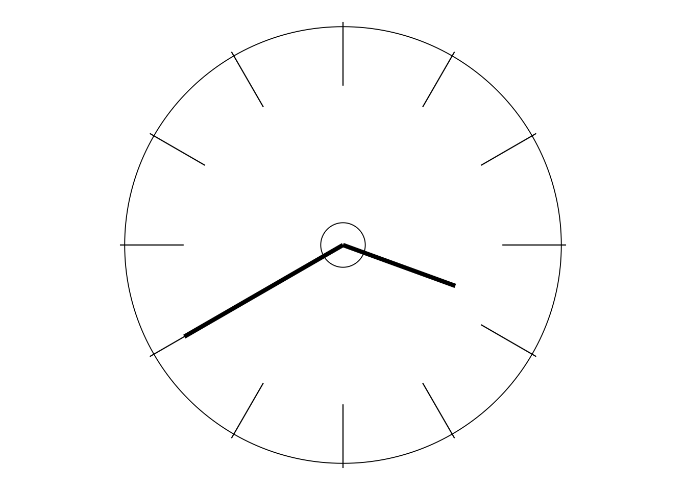
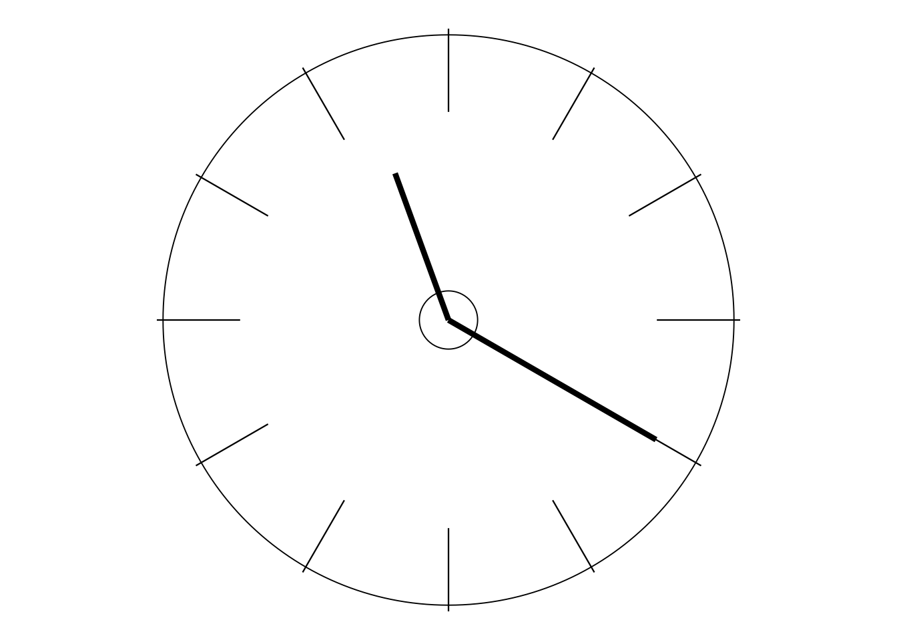
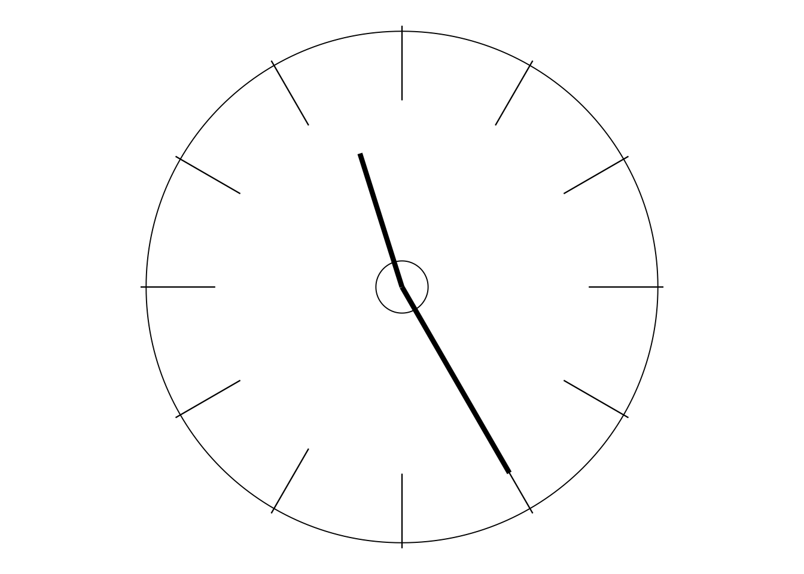

Day 1: The “Overture” and the Deming Story
DAY 1 (morning): THE “OVERTURE”
{kind=link}
Why an “Overture” rather than an “Introduction”? Simply because this half-day contains much more than you would expect in a mere introduction to this structured active-learning course on the approach to management developed by Dr W Edwards Deming—pictured above left (aged 88) with me in 19891 (Such superscript letters as a refer to the “Approvals, Acknowledgements and Information” at the end of the file.)
Continuing the musical analogy, let’s suppose you’ve arranged an evening out at a theatre to enjoy some kind of musical production. Perhaps it’s a light modern musical or musical comedy; at the other extreme, maybe it’s grand opera! In past centuries, overtures were often regarded as no more than background music while the audience ambled in. These days, the overture is usually treated with greater respect, and rightly so. It sets the scene by including several of the main themes from the show, and gives some tasters of the moods and style of what is to follow. Now, it might just happen that you take such an instant dislike to those snippets that you decide to leave the theatre straightaway and spend the evening some other way —which, seeing the price of theatre tickets nowadays, could be a rather expensive decision! Hopefully though, you will instead like what you are hearing, and settle down to enjoy the show and have a very pleasant evening. But at least you will have had some prior warning in case the show is just not “your thing”.
This Overture performs a similar function. It does indeed expose you to an initial “feel” of what is to follow, of both the nature and some of the content of the Deming approach itself and of the style of this course in the way it can help you to learn about it. And that is both sensible and necessary. One section of this Overture is headed “Deming is different”. Yes indeed, very different compared with other approaches to management, to quality, to people—so different that it honestly might not be to your taste. If that is the case then I don’t want to waste your time—that won’t be of any benefit to either you or me. So if, having “heard” the Overture, you really feel this is not for you then you can indeed decide to leave the theatre straightaway and, in this case, you will only have wasted a little time, not a lot of money! Otherwise, please stay and enjoy. Maybe, before long, you’ll find yourself climbing out of the audience to join those on the stage!
DEMING (RE)DISCOVERED
The Deming Prize and the Nashua Corporation
In the 1970s, a medium-sized American company, the Nashua Corporation, was an agent for copying machines made by Ricoh, the well-known Japanese manufacturer. In 1974, Ricoh was awarded Japan’s Deming Prize. The people at Nashua, including Chief Executive William E Conway, did not know who or what “Deming” was. All they knew was that the illustrious and eagerly-sought Deming Prize was Japan’s best-known award for quality, and had been set up as long ago as 1950 by JUSE, the Japanese Union of Scientists and Engineers.
{kind=link}
{kind=link}
The inscription near the bottom of the medal2 is a quotation from Dr Deming:
“The right quality and uniformity are foundations of commerce, prosperity and peace.”
NB Throughout this course, exact quotations from Dr Deming are printed in blue in order to set them apart from my own writing. His own quotations are especially valuable in that he had the rare ability of being able to say a very great deal in remarkably few words. I wouldn’t want to mislead you into thinking that I am capable of the same degree of either brevity or wisdom!
Almost five more years passed before Bill Conway discovered that this “Deming” was in fact an American, Dr W Edwards Deming who, although already in his late 70s, was still actively teaching and consulting, mostly in what he described as “statistical studies”.
Bill contacted Dr Deming and had several discussions with him—discussions concerning events ranging over the previous 30 and more years, the content of which Bill found extraordinary and initially almost unbelievable. Eventually, Bill persuaded Dr Deming to become a consultant for Nashua—although I suggest a “teacher” would have been a better description.
{kind=link}
One of Dr Deming’s first recommendations was that Nashua acquire the services of an experienced statistician. On Deming’s advice, Bill “head-hunted” Dr Lloyd S Nelson, who at that time had been working in the General Electric Company for almost 30 years. That choice was particularly fortuitous for me because, although we had never met, I had been in correspondence with Lloyd for several years, particularly in connection with the Journal of Quality Technology which he had founded in 1970. A short while after moving to Nashua, Lloyd contacted me to ask if I would be interested in getting involved with Nashua’s British subsidiaries. I accepted the invitation.
My main initial task was to help set up and supervise a company-wide training scheme, mostly on some of what are often referred to as the “old tools” or “seven tools” of quality. Lloyd’s syllabus included the Ishikawa diagram (“fishbone” chart), the Pareto chart, flowcharting, brainstorming, and an all-important statistical tool invented by Dr Walter A Shewhart in 1924: the control chart. Don’t worry if you haven’t heard of some or all of these since the control chart is the only such “tool” to be studied in any detail and used in this course. And, even there, anything beyond the basics will just be “optional extras” for those who are really interested in them. Later today we shall also see an extremely important illustration which Deming referred to as a “flow diagram”, but that’s not quite the same as what most people mean by “flowcharting”.
{kind=link}
The four-day seminars
I had no communication with Dr Deming himself during that time. I did, of course, hear more and more about him. One of the things I heard was that the people at Nashua Corporation had encouraged him to prepare and present a public seminar on his work. That seemed reasonable enough to me, but what astonished me was the length of the seminar: four days. Four days? In the university at which I was then teaching Mathematical Statistics, I was more used to seminars lasting an hour at most—and often that seemed too long! But the four-day seminars were clearly successful, and were soon being presented at least once a month. Audiences, which naturally had initially been quite small, were soon being counted in several hundreds at a time.
Then in 1982 a friend at Nashua here in the UK gave me a copy of the mimeographed book which Dr Deming was now issuing to all the delegates at his seminars. It was called Quality, Productivity, and Competitive Position—the same title that was often used at that time for his seminars. It was through this book that I began to discover Dr Deming’s work involved far more than just Statistics!
My first direct contact with Dr Deming came in 1985, and in a wholly unexpected and very privileged fashion. In the Spring of that year, out of the blue I received a letter from a senior official of the George Washington University which, at that time, was administering the four-day seminars. The letter said that Dr Deming was coming to London that summer to present his four-day seminar in Britain for the first time, and had requested that I be invited to assist him at that seminar.
The London four-day seminars became an annual event from 1985 to 1991 inclusive, and I had the same privilege of working with Dr Deming as his assistant at all of those seminars. I was also involved with him in many other events, both in this country and elsewhere, for the rest of his life. The last time I was with him was at his final four-day seminar in Europe, held in Zurich in July 1993, just five months before he died.
I’ll briefly describe the style of the four-day seminars for you. Basically, except for the breaks, Dr Deming spoke from 9.00 to 4.00 each day (except for finishing a little earlier on the final day so that the delegates could get back home). Then the delegates would split into Working Groups to deliberate, often long into the evening, on a choice from a large selection of topics and questions that Dr Deming had compiled. This is where assistants like myself would be busy helping the Working Groups, and then later designing and organising a programme of feedback from the Groups to be presented the following morning for the hour before Dr Deming resumed his teaching. However, he was always there: watching, listening, learning.

The British Deming Association and later
Not surprisingly, I soon began to present my own seminars on Dr Deming’s work and, largely with the help of people that I met at those early seminars and at the London four-day seminars, encouraged the formation of the British Deming Association in 1987. The BDA was a not-for-profit educational organisation having the aims of spreading awareness and aiding understanding of the Deming management philosophy.
Regrettably, “not-for-profit” eventually became too accurate a description, and the BDA is no longer with us. However, over several years, it was effective at “getting the ball rolling” as regards stimulating interest in Dr Deming’s work both in the UK and elsewhere and providing facilities for genuine learning about it. I am glad to say that much of the BDA’s range of activities and learning has subsequently continued through various groups and internet links, some of which I’ll briefly introduce to you in what follows.
Firstly, there are a number of references in this course to events that were organised by the BDA and to the substantial series of BDA Booklets that were written by groups and individuals in, or connected with, the Association. Those booklets, now renamed the “Deming A5 Booklets”, are obtainable from the Learning Store at the Deming Transformation Forum in the UK (http://www.deming.org.uk) which also supplies a range of other Deming-related materials including relevant books and DVDs. The Forum can be contacted for specific advice and assistance including mentoring for individuals and bespoke in-house seminars.
I know of the following long-established and active Deming-based groups in the UK, although there may possibly be more. One is the Deming Alliance which began its days as a group within the BDA. The Alliance’s website is http://www.demingalliance.org and their meetings are held in the Midlands. The Chartered Quality Institute has a Deming Special Interest Group which usually (but not always) meets in London. You can reach it by selecting “Community” at http://www.quality.org and then “Special Interest Groups (SIGs)”. Also, the Deming Learning Network (DLN) is based in Scotland with meetings mostly held in Aberdeen. To contact the DLN you are welcome to e-mail Tony Miller at tony@jmiller.co.uk who can add you to his e-mail list for announcements of meetings and for guidance on becoming involved in online participation. I am sure that all three of the above will welcome contact with 12 Days students—so there’s no need to be shy!
Worldwide, the W Edwards Deming Institute (WEDI) in America is the obvious initial source. The Institute was founded by Dr Deming just before his death in 1993 and becomes more and more active as the years go by. Their main website is http://www.deming.org and there you will find extensive resources on Dr Deming’s work and teaching, including many of his publications at https://deming.org/deming/deming-articles. The Institute presents various seminars and offers videos including the Deming Library (see today’s page 13) and some substantial extracts from his celebrated four-day seminars. The Institute also has a YouTube channel which includes the 1980 NBC White Paper If Japan Can, Why Can’t We? (see page 37) that was so successful in introducing Dr Deming to the American public in 1980.
Also in America, SPC Press Inc (http://www.spcpress.com), who published my book The Deming Dimension in 1990 (see pages 12–13 in the Welcome section of file A. PLEASE START HERE), is another excellent source for Deming-related publications, materials and seminars. It is also one of the websites that are hosting the complete 12 Days to Deming material.
Finally, during the second half of 12 Days to Deming, you will be reading some excellent material by my good friend Balaji Reddie, founder of the Deming Forum of India in 1999. His website http://www.deming.org.in is also a host website of the complete 12 Days to Deming material.
Further, some time spent searching the internet is likely to lead you to any number of other relevant blogs, LinkedIn contacts, podcasts, FaceBook material, etc, etc. Happy browsing!
“STATISTICS? OH NO!”
Statistics?
Now, depending on your background, one feature of the previous section may have already started making you feel a little queasy. And that is the repeated references to things statistical. You know that Dr Deming described at least some of his work as “statistical studies”. You know that one of his first recommendations to Bill Conway was that he hire an experienced statistician. You know that the “all-important” control chart is a statistical tool. And, perhaps worst of all, you know that I used to teach Mathematical Statistics!
I can heap yet more coals onto the fire by quoting the way that Dr Deming was introduced midway through If Japan Can, Why Can’t We?. These are the words of the programme’s narrator, Lloyd Dobyns:
We have said several times that much of what the Japanese are doing [is what] we taught them to do. And the man who did most of the teaching is W Edwards Deming, statistical analyst, for whom Japan’s highest industrial award for quality and productivity is named. But in this country he is not widely recognised. That may be changing.
“W Edwards Deming, statistical analyst”? Well, if so, be sure that that was but a single string on a many- stringed bow!
As you may already have noticed, I am using British spellings and punctuation conventions even when quoting Americans. Since, obviously, I quote Americans a great deal in this course, I thought it appeared rather pedantic and messy to keep switching between the two styles. For simplicity I therefore decided to use British conventions throughout. I hope this causes no offence or difficulty.
But no wonder then that, if you do not have any background in Statistics, you may be beginning to feel a trifle uneasy. But even if you have suffered some introductory Statistics course either recently or long ago, you might also be feeling uneasy. For I am well aware that the subject of Statistics is not a favourite area of study for many people! And yes, I know all the old sayings such as “There are lies, damned lies, and statistics” and “You can prove anything with statistics”, and I am aware of (indeed, have read and enjoyed) books such as Darrell Huff’s best-seller: How to Lie with Statistics.
However, all we see in the main material of this course that is related to the subject of Statistics is what I like to summarise in just two words: “understanding variation”. In fact, those two words form the short title of the best introductory book on the topic that I know of. The full title of that book is also instructive: Understanding Variation—the Key to Managing Chaos (written by my good friend Dr D J Wheeler). But no, I’m not expecting you to become expert in the subject-area known as “Chaos Theory”! In a nutshell, understanding variation is to do with being able to justifiably describe the behaviour over time of processes or systems of any kind by words such as “stable” and “predictable” or, on the other hand, “unstable” and “unpredictable”. Those words indicate pretty well the difference between the two states, and I think you will easily understand that, if your work involves what we are referring to as “processes” or “systems” (and most work certainly does) then that difference is pretty darned important! And the control chart is the invaluable tool which best enables us to discriminate between those two states. The “official” terms for the two states that you will find both Drs Shewhart and Deming using are respectively “in statistical control” and “out of statistical control” although, in the former case, Deming also often refers to a “stable system”.
The point I want to emphasise here is that what I am expressing as “understanding variation” is different from the material usually taught in introductory (and, indeed, later) conventional Statistics courses. If you have ever had an introductory course in Statistics then I doubt very much whether you ever heard of either Walter Shewhart or the control chart during that course. Indeed, it is sadly true that some people who have university degrees in Statistics haven’t heard of them either! In this course (apart from the Optional Extras section which is included purely for the benefit of people who might be interested in more technical matters) we shall not be involved with such things as probabilities or the normal distribution or the binomial distribution or any other probability distribution, nor with tests of significance, p-values or confidence intervals, nor with techniques to do with regression and correlation, etc, etc. We do not need them. The large majority of what is normally taught in traditional Statistics courses is irrelevant for “understanding variation” in the all-important sense in which we use the term in this course. So, if you haven’t heard of the list of things I’ve just detailed, you actually have the advantage: for then you don’t have any unlearning to do.
That comment might sound flippant. It isn’t. Over the nearly 20 years of my seminars on Dr Deming’s teaching I rarely suffered from having any “difficult” delegates. The few that I had could be divided into two types. One type were very senior managers, the other type were those with some qualification in Statistics. Of course, I don’t mean all senior managers or all statisticians: I mean those who came to the seminar with the impression that they already knew all they needed to know—so really there wasn’t much point in their attending! Regarding statisticians, note well my first quotation below.
But, with my background as a university lecturer in Mathematical Statistics, I didn’t realise any of the above when travelling to London in June 1985 for that first four-day seminar with Dr Deming. You might be amused by a paragraph I wrote on page 76 of the second edition of my little book of Statistics Tables (published in 2011):
At that first seminar, I was looking forward to discovering how all my knowledge of Mathematical Statistics fitted into Dr Deming’s management teaching. It didn’t! I believe there was not a single mention of a probability, a probability distribution or a hypothesis test during the whole four days. Yet Deming was a statistician?! (And indeed a fine mathematician as well.) Further, the only statistical technique he used during the whole four days was the control chart … I had new and very different learning to face.
Incidentally, the full title of Statistics Tables is Statistics Tables for Mathematicians, Engineers, Economists and the Behavioural and Management Sciences which, for obvious reasons, I shall henceforth abbreviate by ST! And, while I’m about it, I may as well also quote a couple of paragraphs from the “Welcome to the Second Edition” on page 2 of my Elementary Statistics Tables (to be similarly abbreviated by EST), which was also published in 2011:
So, what’s new? The majority of the added material focuses on a remarkable statistical technique which, to all intents and purposes, was unknown at the time of the original edition. At this time of writing it is still largely unknown, especially in academia—it hasn’t yet reached most of the introductory Statistics books and courses. But, during the second half of my career (mostly spent outside academia, unlike the first half), I found the process behaviour chart [see the small print below] unbelievably useful due to its (I believe) unique combination of simplicity and effectiveness. Of course, you won’t find it on examination papers. But if you want to analyse and understand data out there in the ‘real world’, I believe you’ll find it invaluable. Many delegates, sent by their boss, would arrive at my public and in-house seminars in fear and trepidation: they’d never been able to ‘do Statistics’—they hated the subject! By the end of the day they could understand the process behaviour chart, and they could use it, and they could communicate with it. So here it is in this new edition of Elementary Statistics Tables—though you don’t even need any tables in order to use it! Don’t scorn its simplicity—try it out on some real process data, including some that you have not previously attempted to interpret.
A couple of points of clarification will be useful here. Firstly, the original editions of these little books of Statistics Tables were published as long ago as 1978 and 1981 respectively—long before I met Dr Deming or learned anything significant about his work. Not surprisingly therefore, those original editions contained little on control charts because, back then, I honestly had no idea of how important control charts are in practice. Second, I’ll remind you of something I mentioned on page 7 of the Welcome section: “process behaviour chart” is an alternative term for “control chart” which nowadays is preferred by many people who use the chart for the purposes relevant to Dr Deming’s teaching. Indeed, I also have generally used it in recent years because, compared with usual interpretations of the word “control”, it describes much better why the chart is so useful. The reason I’m calling it a control chart in this course is that I shall be including many direct quotations from both Drs Deming and Shewhart. Naturally, they used the traditional language, and so, similarly to something that I said on page 5, it didn’t seem sensible here to keep flitting between alternative terms for the same thing.

The two paradoxes
So, as implied by that quote from EST and earlier, the truth is that the statistical tool which had pride of place in Dr Deming’s teaching is rarely to be seen in introductory courses on Statistics—nor, for that matter, in more advanced Statistics courses. I can go further: the bulk of material which is featured in such courses does not get mentioned in Dr Deming’s teaching—except, in some cases, for him to point out that it is unnecessary and misleading! Quite some paradox. And it’s not the only one.
How you react to that first paradox is likely to largely depend on whether or not you have any background in what I’m calling “conventional” or “traditional” Statistics. If you haven’t then I imagine you will welcome the paradox with open arms! But otherwise you may have more of a sense of puzzlement rather than relief. If that is the case then I can sympathise—because, in my own early days of learning about Dr Deming’s work, I was similarly mystified about this. So, to try to help, I have written some additional material just for you which I’ll point you toward at the end of this section. But for now, as implied above, there is another paradox to introduce, and I will deal with this second one right here in the main text.
Let me emphasise even further Deming’s concentration on the importance of control charts. He was clear that it is generally desirable for everyone in an organisation to be able to use control charts and to communicate with them. And, even if that turns out not to be sensible or practical, he was also clear that, the more senior someone is in their organisation, the more essential such ability becomes. As far as he was concerned, the most important control charts should be right there on the Chief Executive’s desk.
Yet in his seminars Deming didn’t teach the details of how to construct control charts! Paradox No. 2.
Yes, he would usually draw up a chart once the results were obtained in his famous Red Beads Experiment which we shall describe and work with tomorrow on Day 2 of our course. But how? He would just write down a simple formula, insert some numbers that had been recorded during the experiment, and carry out a little arithmetic. But there was nothing about where the simple formula came from nor the fact that, with the large majority of processes, that same formula wouldn’t even be appropriate!
So let’s shed some light on this second paradox. This is a quote from my brief discussion on the sixth of Deming’s famous 14 Points for Management: “Institute training” that you will see on Day 4 page 26 [WB 66]:
In Deming’s terminology, the purpose of ‘training’ is the acquisition of specific skills for specific tasks. Training is thus narrowly defined and finite in scale and scope. In contrast, as we shall see in Point 13, ‘education’ is the opposite: very non-specific, very broadly defined, and essentially infinite in scale and scope.
Thus, in Deming’s terms, teaching and learning details about how to construct control charts is training. Teaching and learning how to interpret the charts once they are drawn, and then how to proceed intelligently on the basis of such interpretation, is education. His seminars were most definitely education; what he regarded as the simpler matter of training could be left to someone else. A couple of sentences from his diary entry for Monday 10 July 1950, regarding some lectures to the Japan Medical Association, will con- firm the point:
Professor Masuyama and assistants will teach the statistical control of quality in the afternoon. I shall teach during the forenoon the theory of a system, and cooperation.
So he regarded getting into some training, even on something as vital as the construction of control charts, would be inappropriate during his teaching—it would interrupt the flow of what was really important: education. But in one respect his approach was dangerous. “Professor Masuyama and assistants” might have known what they were talking about but, sadly, many trainers who try to teach people about control charts do not. Please be warned that much of what is currently taught and practised concerning control charts is not wholly consistent with Shewhart’s teaching. For example, control charts are often regarded as primarily relevant to manufacturing processes and requiring data that satisfy certain statistical conditions, in particular that they are “normally distributed”. As previously, don’t worry if you do not know what that means, for the fact is that Shewhart’s teaching was not dependent on such restrictions (though some statisticians seem to wish—or even believe—that it was). Quite the opposite. Indeed, Dr Shewhart was speci- fic about the need to have statistical techniques which really work in practical situations rather than just depend on what he referred to as “a fine ancestry of highbrow statistical theorems”! (This quotation comes from page 18 of Shewhart’s 1931 book which, early this afternoon, you will see described in glowing terms by Dr Deming.) A good way of expressing this is that Shewhart saw the need for statistical techniques that are suitable for our data rather than the need for data that are suitable for our statistical techniques. Think about it! Makes good sense to me. And that is precisely what Dr Shewhart produced.

Control charts in this course
So what does all this imply about my approach to control charts in this course? As in Dr Deming’s seminars, you will not have to construct any control charts if you’d prefer not to. However, you will see some control charts on Days 2 and 3, and so I shall include some relevant description there. But there is already plenty for you to do on both of those days, and so to insist that you also engage in any substantial training on control charts would be too much of a good thing! On the other hand, the educational aspect that I’ve already mentioned is absolutely vital. Repeating what I said above, that is to learn how to interpret the charts once they are drawn, and then how to proceed intelligently on the basis of that interpretation.
On the other hand, you may of course wish to learn a little more or even a lot more about control charts. In that case I’ll mention three possibilities which will enable you to go “beyond the basics”, in addition to Don Wheeler’s book mentioned on page 5. The first is a small number of “Technical Aids” that appear in the material for Days 2 and 3. These will enable you to construct the control charts yourself rather than just use charts which other people have drawn up. The second possibility is an article which is freely available on the internet. Some time ago I was encouraged by a freelance writer named Mitch Beedie to write an introductory article on control charts. Mitch had found control charts extremely useful in his main areas of interest: environmental studies and energy conservation. But he said that he had found introductory literature on the topic quite difficult to understand until he had come across some of mine! He titled the article “Understanding Variation” and added the subtitle “The Springboard for Process Improvement”. I shall therefore shall refer to it in this course material as the “Springboard” article. You can reach it on the UK Deming Alliance’s website via the following link:
And lastly, if you are really keen to have a comprehensive introduction to control charts—going well beyond what is necessary for this course—there is the fairly substantial section of “Optional Extras” described at the top of page 8 in the “Welcome” section. This optional material contains a variety of topics, all more or less connected with control charting. But I must emphasise that both this extra material and the Springboard article really are “optional extras”—take them or leave them as you prefer. However, if you decide to take them, please don’t count them as being within the recommended 12-day timeframe!
So how can I guide you through these various possibilities? I’m going to ask you to choose which of four “Stats-levels” you feel is most suitable for you. Stats-level 0 refers to those who would prefer to avoid as much as possible of anything like even simple arithmetic or drawing very basic graphs. Stats-level 1 is for those who do not mind simple arithmetic and drawing basic graphs but who are not keen to go any further than that. Stats-level 2 applies to those who would like to delve into something about the ideas underlying the construction of control charts, but without getting in very deep. And Stats-level 3 is for those who are already looking forward to tackling my Optional Extras section!
So which Stats-level are you?
After you’ve answered that question, here’s my guidance for you:
Stats-level 0: Don’t even bother with the few Technical Aids on Days 2 and 3. But you will be asked to look at some pictures!
Stats-level 1: Work with the Technical Aids when they come, and have a go at constructing some of the charts yourself.
Stats-level 2: As Stats-level 1 but also browse through the Springboard article when you feel like it and take time to go through it more thoroughly after Day 3 in order to consolidate your learning.
Stats-level 3: As Stats-level 2 but take a look at what’s available in the Optional Extras section whenever you like (out of hours!). Remember that this extra material is only there for those who might be genuinely interested in some of it. Ignoring all of it will not harm your understanding of the rest of this course, although some of it might help to increase your confidence about dealing with control charts when the time comes that you need to. A sensible plan might therefore be to postpone the Optional Extras section until the main 12-day course is completed—unless you just can’t resist looking at some of it earlier than that!
Having worked with some thousands of delegates at my seminars over the years, I am particularly conscious of the need to treat those on Stats-level 0 very gently! So there might be a case for going even further out in that direction and introducing a Stats-level 00! If you think that might apply to you then I should also raise the possibility of you even skipping some of the main text in the morning of Day 3 (but nothing else!)—I’ll guide you when you get there. Now, there are pros and cons in thinking of doing that, so please bear with me while I discuss them.
As regards how knowledgeable somebody may become on control charts, it seems to me that there are three stages. The first stage is the only absolutely vital one for this course. This is where you get to understand why control charts are important and what it is that they are able to communicate to their users. Notice the “why” there rather than “how”. Getting as far as the “how” is the second stage. The third stage goes even further and really is concerned with a further “why”: why is the “how” what it is?!
So the truth is that the first of the three stages is strictly all you need to know in order to be able to understand Dr Deming’s theory of management, which is primarily what this course is about. A later section of this Overture takes a careful look at words like “theory”, so I won’t expand on that right now except to make one crucial point. This is that, at least in Deming’s case, theory has a definite purpose—it is to guide better practice. So, in Deming’s case, theory should be respected by practical people (possibly unlike some other theories!). I am assuming that you are interested in better practice as well as learning the theory, so this will surely mean that, sooner or later, you will want to move onto the second stage: the “how”.
How can a control chart tell you what you need to know? That’s where you encounter the snag about skipping parts of the main text in the morning of Day 3. For, whereas they may be skipped if you were only interested in theory, you will need to work through them when the time comes that you want to effectively turn some of the theory into practice—the “better practice” that I just mentioned.
On the other hand, the third stage is truly optional as far as this course is concerned. Quite a lot of the “how” is largely common sense, but some of it does depend on more “academic” information, such as a few of the details needed to construct control charts. Faced with the choice, most people are content to go by what the “experts” tell them is the sensible way, especially if there is some mathematics involved in the whys and wherefores. So it is the second stage, the “how”, that is important to the user of control charts—how to interpret what the control chart is telling you—rather than the fine detail of why the control chart is constructed in the way that it is. If you want to watch television, do you really need to know why the television—or even the remote control—works? Most people are content to read the instruction book or, at least, the quick-start guide and do what they say. Some of that probably is common sense—but not all of it. If the television doesn’t work for some reason, do you want to learn enough so that you can figure out why it’s not working? No: you call in the engineer and trust that whoever responds to your call understands such things. That engineer has been educated and trained up to the third stage, whereas it is quite sufficient for you and the large majority to go no further than the second stage.
So, in summary, unless you really want to limit yourself to Stats-level 00, do take at least a quick look at all of the main text (except possibly for the Technical Aids). Even if you do not intend to start working with control charts just yet, it would be a good idea for you to get some preliminary ideas about how to interpret them. Then, when the time comes, you could come back to the practical guidance on interpreting control charts (almost all of which is in the morning of Day 3) and study that more carefully then. However, if you are verging on Stats-level 00, be content to just skim through that material for now: I don’t want you to get so fed up with Day 3 that you feel discouraged and thus never move on to Day 4! I repeat: there won’t be any involvement with control chart calculations etc throughout all the rest of this course after Day 3.
If you are following my timing guidance, the difference between Stats-level 0 (including 00, of course) and the rest creates a small problem: on both Days 2 and 3, those on Stats-level 0 will have less to do than everyone else. So alternative schedules will be provided on just those two days. On both days, the initial Contents page will relate only to Stats-level 0 and will then be followed by a similar but different page for Stats-levels 1–3. During the main text, the little clock icons for Stats-levels 1–3 will be on the right-hand side as you are already seeing today, while the clock icons for Stats-level 0 will be on the left-hand side.
That finishes this section; so now, if you wish, take a little time out to read my discussion in the Appendix on the former of the two paradoxes (which I described on page 7): I hope it will shed some light on the mystery. But, again: that discussion is only intended for those who are puzzled by the paradox. If instead you are simply content (and relieved!) by what the paradox has told you then please don’t bother with this extra reading—just carry straight on. Also, the discussion on the first paradox is likely to be of greatest interest to those who are familiar with the basics of “traditional” Statistics—for it includes one of Deming’s most powerful expressions of the irrelevance of several of those basics when studying process data.
So if you would now like to read about the first paradox on Appendix pages 2–6 and are also following my guidance on timings at all closely then please “stop the clock” whilst you are reading those pages.

HELPFUL BOOKS AND VIDEOS
In that optional excursion into the Appendix to discuss the first paradox, I included a couple of recommendations of books which will be useful if at some stage you wish to learn more about control charts. And so this is an opportune time for me to also suggest some further reading along with video material which could be helpful in your learning about the more general main themes and content of this course.
The Deming Dimension
There is some detailed information about The Deming Dimension on pages 12–13 of the Welcome section in the “A. PLEASE START HERE” file.
For brevity I shall henceforth refer to The Deming Dimension simply as DemDim (as do many of the people that I know—I guess it’s a sort of “in-joke” since, whatever else he was, Dr Deming was most certainly not dim!).
DemDim has often been described as written in a “conversational style”. I hope and expect the same may be said of this course. The truth is that I feel incapable of writing in any other manner about this very human subject (unlike in the first half of my career life when my speciality was Mathematical Statistics!).
Again as with other courses, although there is no requirement for you to provide yourself with anything other than the prescribed text, naturally there are further books centred on Dr Deming’s work, plus other materials, especially videos, which could be helpful from time to time. So, particularly in case you have access to a library which could obtain such items for you to borrow, I’ll briefly introduce and describe some possibilities over the next couple of pages. There is detailed information on everything mentioned here and later in the “R. References and Sources” file.
Other books
As far as other books are concerned, I must of course begin with Dr Deming’s own famous Out of the Crisis (1986) and The New Economics for Industry, Government, Education (first published in 1993). However, neither book is really suitable for cover-to-cover reading by newcomers, although the reasons differ considerably between the two books.
Out of the Crisis is a hefty volume, and many people have found it quite difficult to cope with. So, as you will see from the Preface to DemDim, one of the purposes I had in writing my book was for it to serve as a preamble or a kind of “study-guide” for Out of the Crisis. I have long held the impression that Out of the Crisis was the book that Dr Deming never wanted to stop writing! However much he put into it, I think he always wanted to include more. It covers an amazingly diverse range of topics. So it really is too substantial a meal for the newcomer. However, that’s not to say that the newcomer couldn’t relish a choice from the menu!
The New Economics is quite different. It is much shorter, the language is simpler, and the book is generally better organised. I heard from more than one source that certain of Dr Deming’s close colleagues in America impressed on him the difficulties that some had found with Out of the Crisis. And, if I may suggest it, I believe he might have fallen into a trap which will be a big topic during the afternoon of Day 3: the danger of overcompensation! The New Economics is fantastically valuable for those who are, relatively speaking, already “in the know”. But the language is so simple, and important matters are treated so concisely, that there is substantial danger of the newcomer just skating over the surface and having no notion of the considerable depths that lie below that surface. As I have already indicated, Deming was brilliant at saying a lot in only few words, and that skill is nowhere better demonstrated than in this, his final, book.
As a result, one could set literally hundreds of essay questions on examination papers which quote just a single sentence from The New Economics followed by the word “Discuss.”!
But, although not being suitable for you to read straight through just yet, both books would of course be very helpful references during many of the activities in this course. For example, on Days 4 and 5 we shall be working with Deming’s famous “14 Points for Management”, and Chapter 2 in Out of the Crisis spends some 80 pages on those 14 Points. In fact, Out of the Crisis would prove to be an exceedingly useful reference throughout much of this course, while The New Economics would be a useful reference particularly during the second half of the course, and especially during the Second Project on Days 10 and 11.
I carried out some fairly important updates to DemDim in 1992, not long before The New Economics was first published, and I think there is little if any inconsistency between the relevant parts of that version of DemDim and Dr Deming’s final book. I could have gone through DemDim inserting lots of page references to The New Economics as I had already done for Out of the Crisis, but I felt that would have been unnecessarily pedantic because of The New Economics being so much shorter than Out of the Crisis and having a more straightforward structure. (Because of the importance of DemDim to this course, I should assure you that I have made no further revisions to its main content since 1992, and so you may be pretty confident that all page references to it and quotations from it will still be current in your copy!)
NB New editions of Out of the Crisis (Second Edition) and The New Economics (Third Edition) were published in 2018, both now including contributions from representatives of the Deming Institute. With both books, Dr Deming’s text is largely unchanged but a smaller size of print is used in the new editions, and so almost all page references have changed. Seeing that, at the time of writing and for some time to come, there are bound to be many more copies of the previous editions still in circulation, clearly I need to give you the page references for both editions. I’ll do this by using e.g. “page 114[164]” or similarly “pages 57–60[82–87]” where page 114 and pages 57–60 refer to the new edition and page 164 and pages 82–87 in square brackets refer to the previous edition. In case you forget which way round they are, the lower page number(s) always refer to the new edition.
However, in my early days of studying Dr Deming’s work, I also found it useful to enjoy some lighter read- ing—I am sure the relevant authors will not object to that description! I’ll mention the books that I particularly liked. The first to be published was Nancy Mann’s The Keys to Excellence (1985). Nancy’s organisation, Quality Enhancement Seminars, administered Dr Deming’s four-day seminars in the final years of his life. The Keys to Excellence was soon followed by Bill Scherkenbach’s The Deming Route to Quality and Productivity (1986); at that time, Bill was Director of Statistical Methods at the Ford Motor Company. In the same year came journalist Mary Walton’s The Deming Management Method. Bill’s book contains 14 chapters, one for each of Dr Deming’s 14 Points; Mary’s book also contains a chapter on each of the Points. All three of these books can easily be read cover-to-cover. Both of the latter two authors also produced a second book: Bill’s was Deming’s Road to Continual Improvement (1991) and Mary’s was Deming Management at Work (1989). Two other books I would commend are Rafael Aguayo’s Dr Deming—the Man Who Taught the Japanese About Quality (1990) and (at a rather deeper level—not for your first read) Deming’s Profound Changes by Ken Delavigne and Dan Robertson (1994).
And last, but definitely not least, here is by far the newest of all my recommendations: The Essential Deming, subtitled Leadership Principles from the Father of Quality. This remarkable treasure, faithfully collected and assembled by Dr Joyce Orsini, was published almost 20 years after Dr Deming died. But, apart from some brief introductions, it is all in his own words! Joyce painstakingly sifted through literally thousands of articles, speeches, notes, presentations, lectures, audiotapes, etc to produce this masterpiece. But, as she correctly indicates in her Preface, it is in no way a replacement for Out of the Crisis and The New Economics: it is instead “written for those people who wish to see more of what Deming had to say about management in this world we live in, beyond those two earlier books.” So, if you’ll be guided by me, do not get The Essential Deming until you have completed this course, but instead promise it to yourself as a constant companion in your lifelong learning which will then follow. By the end of the course you will have become sufficiently familiar with Dr Deming’s inimitable style of writing that The Essential Deming will then be both a more enjoyable read and a much greater help to your learning than previously. Those of us who were so fortunate as to know and work with Dr Deming can still hear him speaking the words in this book: for those not so fortunate, The Essential Deming is a superb substitute.
Videos
Regarding videos, there were two quite well-known short British-made TV documentaries: Doctor’s Orders (produced by Central ITV in 1988) and A Prophet Unheard (from the BBC in 1992). I often used part of Doctor’s Orders in my introductory seminars. A Prophet Unheard, which is a more “glitzy” production, is good in parts but, in my view, also contains some rather questionable sections.
Moving on to American material, the best-known set of relevant videos is The Deming Library. At the time of writing (2018) there are 32 titles, most of which were produced during the final six years of his life, though there have been a few later additions. The videos are generally around 25 minutes long.
However, my personal favourite amongst the American videos is The Deming of America. This video, which was made for PBS (America’s Public Broadcasting Service) in 1990 and 1991, i.e. around Dr Deming’s 90th birthday, is excellent. If you want to buy, or try to borrow through a library, a video on Dr Deming and his work, The Deming of America is my clear main recommendation. Having been filmed at that time, Dr Deming’s contributions to it are, of course, very representative of the nature and content of his teaching during the final years of his life. Also, unlike videos that come from some other sources, here he was given reasonable time and opportunity to make his points and emphases in ways that really can make an impact on viewers. What also helped was that its producer and interviewer, Priscilla Petty, showed some good understanding of Dr Deming’s work, a characteristic not shared by some of his other interviewers (and, if so, he certainly let them know it!). The video is also notable for the contributions made by many top Industrial leaders, demonstrating how important Dr Deming’s influence had been on them personally and to their companies. I shall quote from The Deming of America several times during this course.
Having recently checked on the internet, I cannot find Doctor’s Orders anywhere, but A Prophet Unheard is available. Also, both the Deming Library collection and The Deming of America are available from official distributors, the former from the Deming Institute (see page 4) and the latter from http://www.PriscillaPetty.com. As you’d expect from the quantity concerned, the Deming Library would burn rather a hole in your pocket but The Deming of America is not overly expensive for this excellent hour-long programme.
And finally…
If and when the time comes that you might like to learn more about the man as well as his message (for this final recommendation does both), treat yourself to The World of W Edwards Deming, the superb biography compiled and written by his faithful long-term secretary, the late Cecelia (Ceil) Kilian. This is where I discovered the various entries from his diary that I quote during this opening day of the course and also his extremely illuminating “Summary of Teachings to Top Management and to Engineers in Japan”, based on his work in that country in the summer of 1950—see today’s page 35.

ACTIVITIES, MAJOR ACTIVITIES, PAUSES FOR THOUGHT, PROJECTS AND “YOUR ORGANISATION”
As you may already have gathered, in my seminars the delegates did much more than just listen to me! In the same way, in this course I shall ask you to do much more than just read what I am writing. If you prefer only to read then please content yourself with one or more of the books I have just mentioned. But this course is for active learning, and that is quite different from merely reading.
If you have so far not read the “Welcome to 12 Days to Deming” in the “A. PLEASE START HERE” file then please “stop the clock” and do so before continuing here. It contains lots of necessary information and good advice!
So on every Day of this course I shall from time to time ask you to stop and do something—let’s call it a “request for action”. At one extreme the request may simply be for you to spend just a few minutes thinking about something and jotting down a few relevant notes: I’m calling this a “Pause for Thought”. When more time and effort is needed, the requests for action will be called “Activities”. On most days there will also be a “Major Activity”—a term which needs no explanation! And, finally, the course includes those two substantial projects mentioned in the Welcome section, the first taking place during the afternoon of Day 4 and all of Day 5, and the second occupying virtually the whole of Days 10 and 11: these projects replace the need for Major Activities on those days.
On Days 2 and 3, the Major Activities will mainly be matters of time rather than requiring a great deal of deep thought. But, after Day 3, the Major Activities and projects will involve both time and deep thought— generally in increasing amounts as we proceed through the course. But that reflects what would happen in my seminars. During the first day of my most usual three-day seminar I would ask the delegates to contribute very little: they needed time to begin to assimilate the content and style of what they were learning. On the second day there was still plenty for me to do, although now there were increasing amounts of time spent on delegates’ discussions and feedback. But on the third day I only contributed about an hour or so to the proceedings. The morning was mostly taken up by delegate-led sessions on topics such as the three in “The New Climate” (see page 18), to be studied here on Day 8. Often the delegates were preparing these sessions in small groups until late the previous evening: and it was not unknown for me to find the early risers doing further work on them before the final day of the seminar commenced. And then, after my “hour or so”, the afternoon would be spent with us all involved in discussing topics on which the delegates chose to spend a little more time.
Yet again, this pattern is quite well-reflected in what happens during this course. For example, there is often some discussion on the various requests for action either in the main text or in the Appendix. Such discussion is sometimes quite substantial, especially during the first half of the course. In particular, there is a great deal of help for you during the First Project on Days 4 and 5. By the second half of the course, you should be getting well into things and therefore will be more capable of coping on your own. There will still be some help in the Appendix, but generally not as much as previously.
In the Second Project on Days 10 and 11 I shall be introducing you to what I regard as some of Dr Deming’s very best writing—concise but containing a wealth of learning. Here I shall simply ask you to read what he says—sometimes only a single sentence!—and then work on it an item at a time. The better you will have worked on the First Project and many of the other requests for action earlier in the course, the easier you will find that task to be. Following the pattern outlined above, there is still some help for you in the Appendix during the Second Project but not as much as in the First Project since, by then, you should largely be more able to stand on your own two feet! I shall, of course, give you the necessary page references whenever I have included my thoughts in the Appendix. However, except when I suggest otherwise, always do some work first before consulting the Appendix!
All four types of request for action just discussed are clearly signalled in the text. On each day, the Pauses for Thought and Activities are sequentially labelled a, b, c, … and are colour-coded in green or red. The heading is printed in that colour and the corresponding material is enclosed in a similarly-coloured box. Red indicates that I have included some relevant discussion immediately following the request, and so warns you not to look ahead until you are ready. My discussion material is easily identified by being enclosed in a shaded red box. So (whether you are using a printed copy of the Workbook or of the complete material), if that discussion is visible on the same or the next page, it would make sense to cover it up whilst working on the request. Otherwise the discussion will be on the following page, so don’t turn to that page just yet. If the request is colour-coded green then there is no such discussion within the text. There is no need for you to memorise all these conventions right now: I’ll remind you when the time comes. No colour-coding is needed for Major Activities or the Projects as they are headed appropriately.
Finally, particularly on Days 6, 8, 9 and 12, specific reference will be made to “your organisation”. Presumably, many people who work on this course are already (or have been) employed by some company or other type of organisation. If that is your case then, with respect to much of the learning which will develop on those occasions, I’d like you to actively think about what is going on (or went on) in that organisation. Alternatively, if you haven’t yet been employed, but are a student at some college etc, you could possibly think about that educational institution. However, I believe you will learn more if you identify yourself as an employee or a manager rather than as a student. Therefore, if you do not fall naturally into such a role, I’d strongly recommend that you try to find a colleague or other friend who does, and who would be willing to spend some time with you now and again as you work through the course. The relevant requests for action will specifically ask you to consider what is happening in “your organisation” and relate it to what you will be learning here. So, if you are not involved with an organisation in this way, your recruit can then provide you with a “surrogate” organisation to use in your study!

OUTLINE OF THE COURSE
As you have already seen, this Overture contains lots of “bits and pieces” about what is to follow during the course. When the Overture ends, the curtain goes up and the story begins. And that is true in two senses for what happens on this opening day.
This afternoon we shall set the scene for learning about Dr Deming’s work, primarily by providing a brief account of his life story. The purpose is not just to give you a history lesson—though many people find the history quite fascinating in its own right. The main purpose is to use his life story to quickly provide you with some insight on how and why his understanding and teaching developed in the way that they did, how one thing led to another, and where and how some of the themes from this Overture fit into the main event. Then, on future days, as we study particular aspects of his teaching in greater and deeper detail, you’ll begin to understand how they fit into the jigsaw. And, in many respects, Deming’s teaching is indeed like a jigsaw—with lots and lots of pieces! Also like a jigsaw, the pieces do all fit together—though sometimes it can take a while to see how. But it will be worth the wait! For, yet again like a jigsaw, it is only when the pieces start fitting together, and you see how and why they fit together and thus become aware of how the picture is developing, that you will begin to appreciate the importance and potential and strength of Dr Deming’s unique contribution to management understanding.
In the opening section I briefly related how, not long before his 79th birthday, Deming was at long last “discovered” in his home country of America and subsequently elsewhere in the West. But this afternoon’s account starts at the very beginning, expands in particular on his formative work with Dr Walter Shewhart in the 1920s, through his main work with the Japanese in the 1950s, and then his eventual discovery in the West and what happened thereafter. Chapter 2 of DemDim (remember: that’s my book The Deming Dimension) provides useful additional and complementary reading to what is written here and follows essentially the same pattern as used this afternoon.
Although I hope you will find both this morning’s Overture and this afternoon’s “Deming story” to be mostly easy reading, there are times when you should be prepared to slow down and engage in some relatively deeper study and thought—else you may find this first day will turn out to be more like half a day (depending on the speed at which you read). So it is worth my giving you some advance notice of those occasions.
Firstly, there will be a few of those “requests for action” that I described in the previous section, and it would usually be wise not to rush through those. But, in addition, there are three short sections of the text (each occupying no more than two pages) that are well worth reading and re-reading slowly and carefully in order to gain a real appreciation of what they are saying and of their importance.
The first of these important sections occurs later this morning: the one titled “Deming is different”. (And how!) Then, this afternoon, the second particularly important section follows my account of the 1920s which, as you would now expect, will focus on understanding variation. So far I have mostly concentrated on what Shewhart’s discoveries did not involve, namely ideas and techniques of “traditional” Statistics. In contrast, at this stage of the afternoon I shall present a compact summary of what I’ll refer to there as “Shewhart’s breakthrough”, covering both what the main concepts are and why they are so important in practice. And later on, when we reach the 1950s, the last of these three vitally important short sections is Deming’s own summary of what he taught the Japanese all those decades ago.
So each of these three short sections briefly introduces a host of features of, or strongly related to, Dr Deming’s teaching. The more you can become really familiar with these features at this early stage, the better prepared you will be for what you’ll find later on. If you are working on your own, you might write some notes on the matters raised in these sections, including your thoughts about how different life would be if you were working under or with a management that is being guided by Deming’s teaching. If you are with a group then, of course, you have the opportunity to engage in some introductory discussion on these same matters. My guidance on timings should be particularly helpful to you in judging how long to spend on such occasions.
You might find it helpful to briefly check out those three sections right now and make a note to give them special attention when the time comes. The first section is on pages 27 and 28; the second section starts at the bottom of page 31 and continues to the middle of page 33; and the third section is on page 35.
Finally, at the end of the day, there will be your first “Major Activity”. This one will help you to appreciate the truth of what might initially appear to be a rather controversial claim, but which is a yet further foundation for much of what will follow. Getting all these foundations firmly in your mind will be extremely helpful preparation for the rest of the course, and for your understanding of how and why Deming’s unique teaching is so different but yet so valuable compared with what is generally to be found elsewhere.
In addition to this afternoon’s “Deming story”, there is a broader sense in which this course is designed in a “telling the story” mode. By and large (but not slavishly), the remaining 11 days cover Deming’s learning and teaching in the chronological order in which they developed. That sense of how things progressed over time, “how one thing led to another” as I’ve already expressed it, I found to be very helpful in my own learning, and so I have always adopted the same approach in my teaching. Thus, of course, Days 2 and 3 will concentrate on the obvious starting-point: understanding variation. As you already know, Dr Walter Shewhart’s crucially important breakthrough in this area during the 1920s was really where it all began. How young Mr W Edwards Deming (not yet Dr Deming) became involved as early as the mid-1920s will be included in this afternoon’s account. Days 2 and 3 will be no sophisticated academic treatise on understanding variation: instead, most of the time will be spent working with two experiments that Dr Deming used in his seminars.
Tomorrow, on Day 2, we shall describe and work with Dr Deming’s renowned “Experiment on the Red Beads”, performed (to the best of my knowledge) at every one of his four-day seminars from at least 1982. (However, referring e.g. to Out of the Crisis page 300[pages 351–352], it is clear that he had been using some version of it since the 1950s if not for longer.) I have already indicated that, when referring to “understanding variation”, we are generally concerned with how to sensibly interpret data that are generated by “processes” or “systems”. Such data are usually recorded over time: hourly, daily, weekly, monthly, etc; the experts often refer to these data as time-series data. But, compared with what I have just written and as you will soon see tomorrow, the Red Beads Experiment demonstrates all too clearly how easy it is not to interpret time-series data sensibly!
For a long while, the Red Beads Experiment was the only experiment included in the four-day seminars. However, in his final few years, Deming also added a discussion of the “Funnel Experiment” which was invented by Lloyd Nelson in 1986. I will give you advance notice that on Day 3 we do not merely have a “discussion” of the Funnel Experiment: instead, during the afternoon, you will actually be carrying it out, although in a rather more convenient form compared with Dr Nelson’s original version (now using a couple of dice rather than a funnel and a marble!).
Deming sometimes described the Red Beads Experiment as “stupidly simple”. The same description could easily be applied to the Funnel Experiment. So what does the Funnel Experiment demonstrate?
I expect you will be familiar with the old saying that “the road to Hell is paved with good intentions”. Deming’s version, often repeated in his seminars, was:
“The world is being ruined by best efforts.”
But what could be wrong with good intentions and best efforts? Nothing—if (and that’s a big “if”) they are guided by genuine understanding. But if they are not so guided then those good intentions and best efforts may not only fail to improve matters: they can all-too-easily make things worse, sometimes much worse. (You might be able to think of some political examples of that effect!) Early this afternoon you will find Deming referring as follows to this phenomenon as he saw it happening in Western Electric, the company where he met and worked with Dr Shewhart:
“ … the harder they tried, the worse were the effects. … When anything bad occurred, they went to work on it to try to correct it. A noble aim. There was only one little trouble—their noble efforts did not work. Things got worse. … Sure we don’t like things which go wrong—but if we wade in at them without understanding then we make things worse.”3
In the context of the Funnel Experiment, what’s missing is the understanding of what Deming meant by a “stable system”. The reason I want you to try out the Funnel Experiment for yourself on Day 3 is that, if I merely tell you about the kind of things that can happen, you might not believe me! But when they happen to you while you are carrying out the experiment, you’ll just have to believe them!
When I met and began working with Dr Deming in 1985, besides the Red Beads Experiment the majority of the time in his four-day seminars involved his 14 Points (sometimes he called them “Obligations”) for Man- agement, along with the “Deadly Diseases” of Western Management that need to be cured, plus a long list of “Obstacles”—which we could regard as “minor diseases”, but diseases nonetheless. We shall study the 14 Points and the Deadly Diseases on Days 4 and 5, and the Obstacles in the afternoon of Day 7.
As a relief from the possible gloom to do with diseases, obstacles, and the fact that many managers certainly do not regard the 14 Points as “Obligations”, on Day 6 we return to the story-telling mode. The concentration there is on the way a particular company, Gallery Furniture in Houston, Texas, made a huge suc- cess of adopting the 14 Points and curing the Deadly Diseases during the 1990s, and of the resulting effects on its business. (You might like to check out http://www.galleryfurniture.com to see how the company is faring all these many years later.)
Hopefully encouraged by that story, we return on Day 7 to many of the problematic matters that are raised in the 14 Points, etc. Day 7 includes numerous true stories to demonstrate the validity of what Deming taught about those matters: there are also a few such stories at the end of Day 6 to provide a stark contrast to what we will have been learning earlier about Gallery Furniture!
The content of the four-day seminars as indicated so far began to change in 1987, first steadily but then, so it seemed, at an ever-increasing pace. Dr Deming was, of course, now in his late 80s, and so he must have begun to realise that his time was limited, and that he had much, much more to teach.
Around that time there were three big new emphases that struck me as particularly important. They were:
- the importance of genuine cooperation in business compared with competition and conflict;
- the need for innovation rather than just improvement; and
- “Joy in Work”, three little words which take the concept of “pride of workmanship” (featured in the 12th of the 14 Points) a long stride further.
We shall cover these three emphases on Day 8 (see also DemDim Part 3: “The New Climate”).
On Day 9 we shall concentrate on two topics. Firstly, the concept of a “system”. Now this was absolutely fundamental in Deming’s thinking from his early learning with Dr Shewhart; indeed the need to regard “the organisation as a system” featured strongly in his teaching to the Japanese in the 1950s. But in retrospect it seems to me that, during the first couple of years that I knew him, he did not dwell as much on this as might have been expected. But he certainly did so by, say, 1988–89. And, as my second topic here, also in 1989 he started talking of “Profound Knowledge”: “Profound” indeed, deep not superficial, and “Knowledge”—knowledge and understanding as compared with mere information.
Later in 1989 those two topics merged into his “System of Profound Knowledge”, much of whose content is encountered and studied during the Second Project on Days 10 and 11. Now, “System of Profound Knowledge” is a pretty scary phrase. In my own seminars, I rarely mentioned it until relatively late in the event, i.e. not before much else had already been covered. But then I always enjoyed seeing the sense of relief on my delegates’ faces when it began to dawn on them that they were already familiar with much of what is contained in the System of Profound Knowledge from what they had learned earlier in the seminar! Similarly, here the System of Profound Knowledge as such is largely left until quite late in the course. But, again as in the seminars, you will find that, by that time, much of it will not be new to you. That being the case, there will now be an even greater emphasis on the “system” nature of Deming’s teaching, i.e. the way that things link together, including the four parts of the System of Profound Knowledge: no longer just lots of “bits and pieces” but instead a strongly coordinated whole. I believe we should regard the System of Profound Knowledge as Dr Deming’s attempt to bring together and consolidate his whole long life’s learning as a rich legacy for us from which to continue learning after he was no longer with us.
And lastly, the process of beginning to bring it all together—and making it happen—is the subject of our 12th and final day. And I must surely emphasise “beginning” to do that. You have already seen me using the phrase “lifelong learning” near the top of page 13. Believe me: if this is not lifelong learning then I cannot imagine what is. I hope you were not deluded by the title of this course to think that it will all be over by the end of the 12th day! Perhaps I should have simply titled Day 12 as “The End of the Beginning”.

QUALITY, THEORY, PHILOSOPHY, MANAGEMENT,…
How can we describe Dr Deming and his work? Dr Deming is sometimes referred to as a “quality guru” and, in an unpublished booklet that I once read, as “the father figure of the modern quality revolution; perhaps the number one guru”. When I read that booklet, those attributions made me feel a little uneasy. However, if a “guru” is indeed, as quoted there, “a good man, a wise man and a teacher” then I have no problem with it, for I know that all three parts of that description were wholly appropriate to Dr Deming. It was the word “quality” that concerned me, for it occurred to me that, to my recollection, I didn’t hear Dr Deming refer to “quality” very much during the final few years of his life.
However, rather than just depending on memory, I thought I should attempt to find some evidence. So I tried watching and listening carefully to ! The Deming of America—and carrying out some word-counts. Would you believe, throughout that hour-long video, Dr Deming only mentioned “quality” three times! The first mention was:
“Our quality does not stand up. Not many years ago—70 years ago, 80 years ago—this country made half the manufactured product of the world.”
The second mention was in a phrase that I had heard from him time and time again:
“Quality is made at the top.”
Pause for Thought 1-a which follows is also (somewhat unsurprisingly!) on Workbook page 1.
The red box indicates there will now be a Pause for Thought or Activity which is immediately followed by some relevant commentary. My commentary will be in the subsequent shaded red box. So always try to avoid looking inside the shaded box—just a single sentence in this case—while you’re thinking about what the “request for action” is asking you to do. Preferably cover it up with something!

And then, as a case in point, Dr Deming’s third and final mention of “quality” was:
“Sure we want good results. But if you manage by results, quality goes down, morale goes down.”
The following two Pauses for Thought are also on Workbook page 2.
Unlike a red box, a green box indicates an Activity or Pause for Thought with no associated box of commentary.
PAUSE FOR THOUGHT 1-b
Why do you think Dr Deming said that, if you manage by results, both quality and morale go down?
(If you cannot think of reasons now, be sure that you will find plenty as the course progresses.)

PAUSE FOR THOUGHT 1–c
I well remember a time that I met up with an old acquaintance. I hadn’t seen him for a while, so he didn’t know of my change in career and interests (and university)—he thought I still lectured in Mathematical Statistics somewhere else. “So what Department are you in, here at this university?”, he asked. “The Quality Unit”, I said. His face dropped. “Quality? Ugh!”
Why do you think that the word “Quality” might have provoked such a negative reaction?
(For brief discussion see Appendix page 6.)

So, with only three “hits” for “quality” in the video, I thought it worth counting how many times Dr Deming said “management”. Rather more: 14! (And, of course, there were yet more if one also counted “manage”, “manager”, etc.) That’s more like it. Deming’s teaching, certainly during the time that I knew him, was not directly about quality: it was about management and, in particular, the kind of management which produces quality—in the broadest sense of those words.
Interestingly, he came up with the word “theory” 11 times in the video. And that is how he most usually described his work, as:
THEORY OF MANAGEMENT.
Now, “theory” is a word which tends to put some people off. They think of “theory as opposed to practice”, “it’s all right in theory but it won’t work in practice”, etc, i.e. their image is that theory and practice are at opposite ends of a spectrum. But that is not how Dr Deming used the word. As a neat indication of how he saw it, here is just part of a sentence from his 1960 book, Sample Design in Business Research:
“… the theoretical statistician, one who guides his practice with the help of theory …”
And this use of the word does not just apply to statisticians! In Deming’s mind, the very purpose of theory is to help guide better practice. And if a theory does not do that then it’s not good theory and it needs modifying or even abandoning (c.f. the Deming Cycle on Day 11).
Dr Deming’s opening words in one of the many four-day seminars at which I was present summarised it pretty well. He rose slowly to his feet, smiled gently at the 600-strong audience, and said:
“This may be a new experience: you have come to learn. You may have come for a formula. There is no formula. There is no Step 1, Step 2, Step 3, … . We are going to learn a whole lot more. We’re going to learn theory. We’re going to learn why we have to do what we have to do.”
“ … why we have to do what we have to do.” I think there could be no better description of what Dr Deming meant when he used that word “theory”. Theory helps us to understand and think logically: to get those little grey cells (as Hercule Poirot would call them) working for us more constructively and success- fully than ever before. Rather similarly I recall when, at another four-day seminar, Deming was answering a question from a delegate. I cannot remember the question but I certainly remember part of his answer. It was: “I do not want you to do something because ‘Deming said so’. I want you to do it because you understand why ‘Deming said so’.”
Another word that is often used to describe Deming’s work is “philosophy”: the Deming philosophy of management. If you don’t like the word “theory” then it’s pretty certain that you won’t be enthused by the word “philosophy” either! But what is a “philosophy”? A brief way of describing it is as a “way of thinking”. But surely what we do is largely governed by the way we think. So “philosophy” might be rather practical as well …
Finally, just as a passing comment for now but of great relevance to what follows later in the course, here are two other word-counts from Dr Deming’s contributions to The Deming of America. He used the word “system” no less than 24 times, and the word “optimisation” 11 times (just as often as “theory”), invariably in the context of “optimisation of the system”. As one of my main themes which are heard in this Overture, these words are of fundamental importance.

THE ATTRACTION OF DEMING’S WORK
Let me tell you now what first really began to attract me seriously to Deming’s work. It wasn’t the statistical ideas (as you might have thought, because of my background as a statistician). It was the fact that his teaching was so human! I saw and heard so much genuine, warm respect and empathy for humanity, individually and collectively. It was from him that I first heard ideas like “a company’s most important asset is its people”. But he really meant it (unlike some others from whom I’ve heard similar words). I heard scorn of management whose first reaction when anything goes wrong is to look around for whom to blame, the scapegoat. I heard passionate criticism of unemployment—or rather of management, and indeed government, that brings it about, be it accidental or intentional. It wasn’t that he was thinking about the cost of supporting the unemployed. In contrast, it was the cost of the waste of human potential and self-respect that concerned him. For confirmation, one could open his book Out of the Crisis at the very first page of its Preface—there’s no need to even get into the main text! Here’s a brief extract4 from that page (in which I wish the first few words were really true):
“It is no longer socially acceptable to dump employees on to the heap of unemployed. Loss of market, and resulting unemployment, are not foreordained. They are not inevitable. They are manmade.”
The 1980s (first half): The West awakens
Photo by courtesy of SPC Press Inc.↩︎
Copyright© Deming Prize Committee. All Rights Reserved. http://www.juse.or.jp/deming_en/↩︎
On 6 July 1989 Dr Deming spoke at a meeting which was organised by the Association Française Edwards Deming and held at the Palace of Versailles. I was present, recorded the proceedings and subsequently based BDA Booklet A6: Profound Knowledge on the event. This quotation on page 18 is one of many from that day which I have included during this course. Copies of the BDA Booklets (which are now known as Deming A5 Booklets) are obtainable from the UK’s Deming Transformation Forum: http://www.deming.org.uk.↩︎
This and all other quotations from Out of the Crisis have been reproduced with the approval of the W Edwards Deming Institute and MIT Press. See https://mitpress.mit.edu/contributors/w-edwards-deming.↩︎
PAUSE FOR THOUGHT 1–a
“Quality is made at the top.” Do you agree, and why?
The quality of what a company provides for its customers, product and/or service, results from how the top management runs the company—and how the company is run depends on top management’s values, principles, priorities and knowledge.